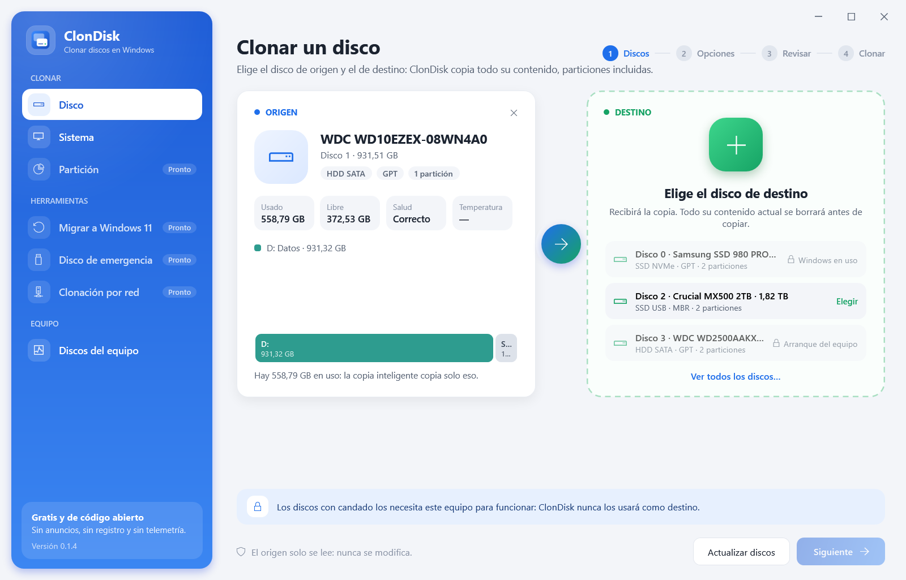
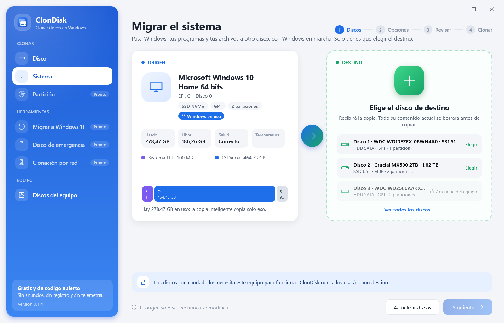
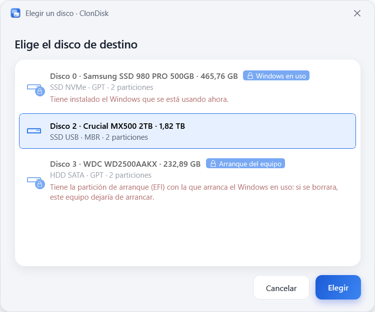
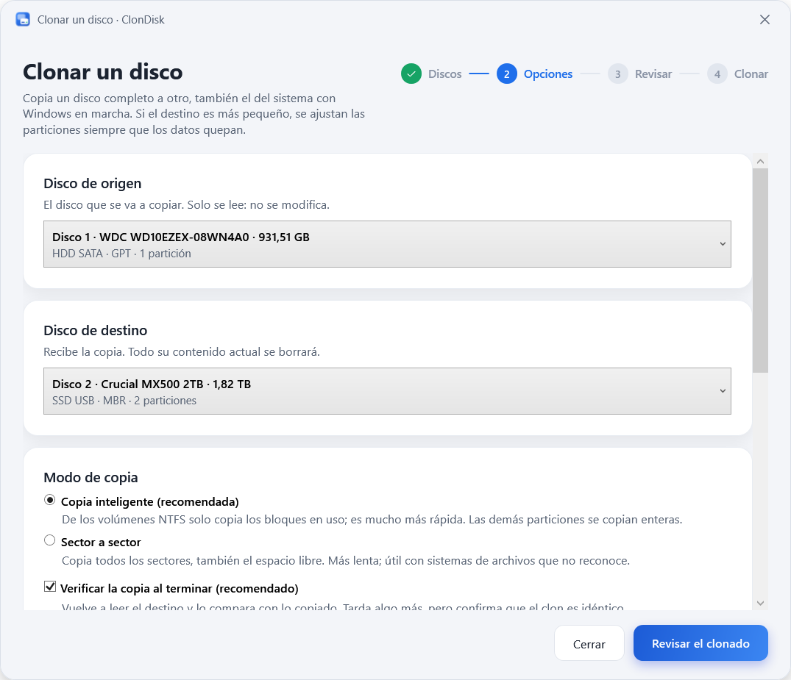
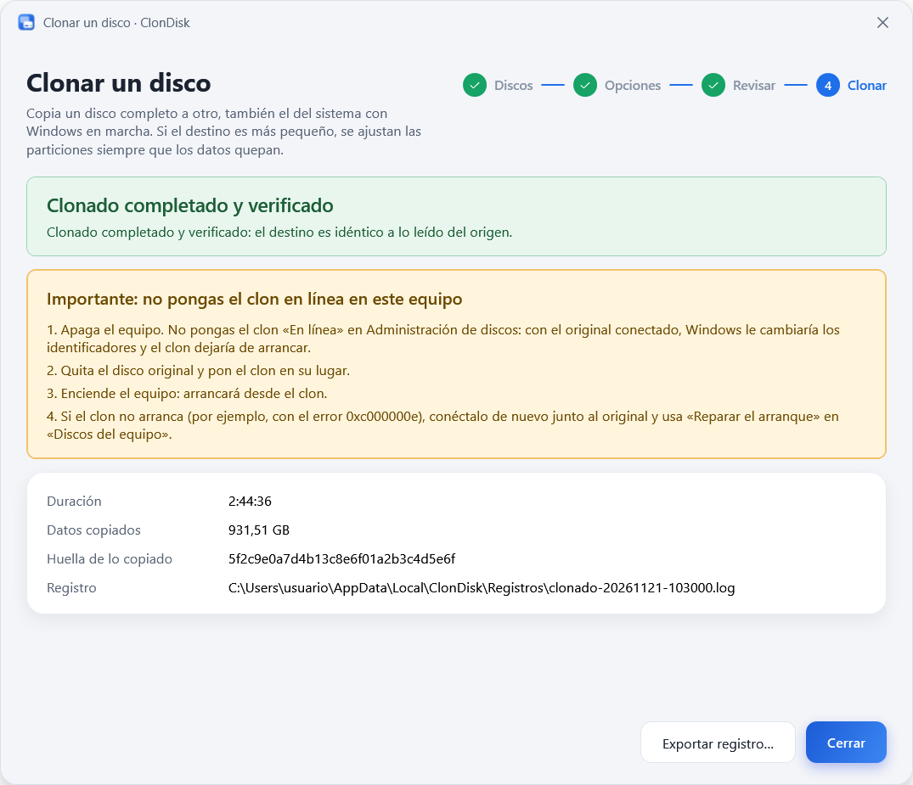
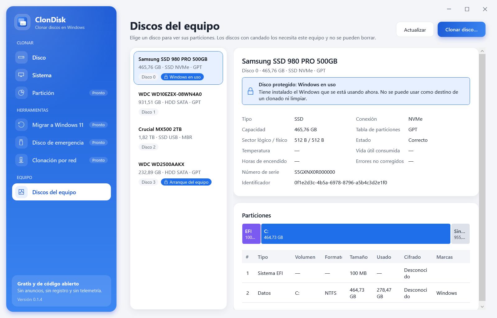
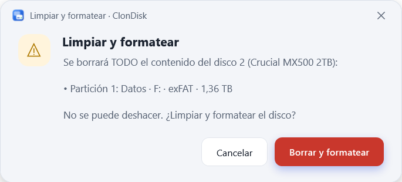
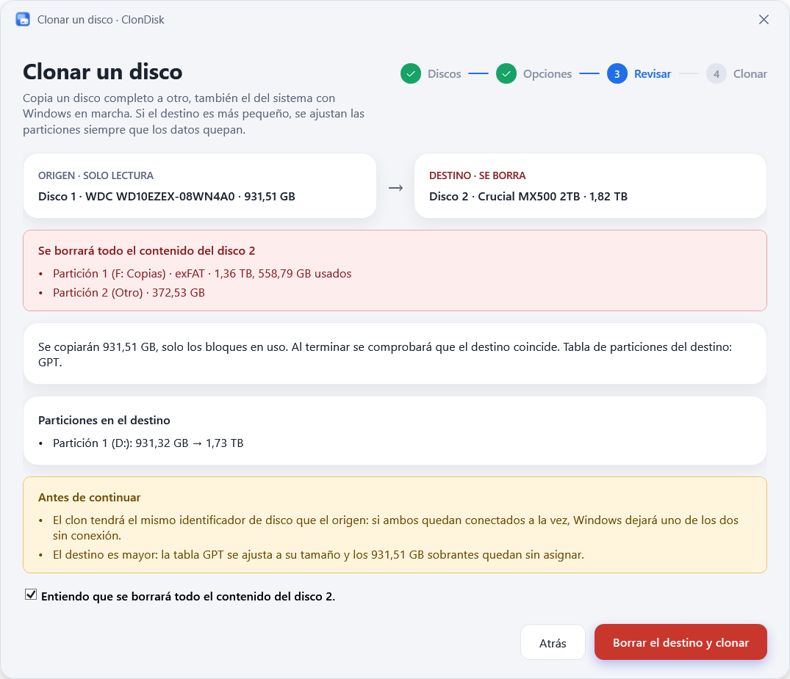
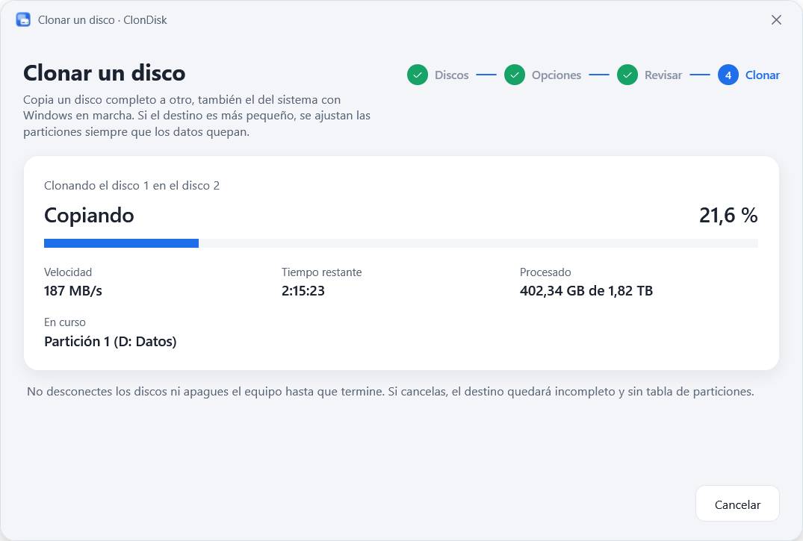

Migrar Windows a un SSD
Pasa tu Windows de un disco duro lento a un SSD (SATA, M.2 o NVMe) sin reinstalar y nota la diferencia al arrancar.
ClonDisk copia un disco duro o un SSD entero a otro disco, incluido el disco donde está Windows mientras lo usas. Migra Windows a un SSD sin reinstalar: tus archivos, programas y ajustes siguen igual.
Versión 0.1.4 de prueba · Windows 10 y 11 de 64 bits · No requiere instalación

Clonar un disco es hacer una copia exacta de todo su contenido, particiones incluidas, en otro disco. Así cambias de disco sin volver a instalar Windows ni tus programas.
Pasa tu Windows de un disco duro lento a un SSD (SATA, M.2 o NVMe) sin reinstalar y nota la diferencia al arrancar.
Clona a un disco más grande y amplía la partición principal o reparte el espacio libre entre tus particiones.
Si tus datos caben, ClonDisk reduce las particiones para que todo entre en un SSD de menor capacidad.
Convierte la tabla de particiones del clon entre MBR y GPT y rehace el arranque de Windows para el modo que necesites.
Guarda un clon completo listo para sustituir al original si falla, sin restaurar copias de seguridad.
Copia discos internos o externos por USB, entre HDD y SSD en cualquier combinación.
Clonado seguro, sin pagar y sin publicidad.
Copia el disco del sistema en marcha gracias a las instantáneas VSS de Windows. No necesitas reiniciar ni arrancar desde un USB.
Solo copia los bloques en uso: un disco de 1 TB con 350 GB ocupados copia unos 350 GB. También hay copia sector a sector.
Amplía, reparte o reduce el espacio según el disco nuevo, y alinea las particiones a 1 MiB en los SSD.
El disco de tu Windows y el de su arranque llevan candado: ClonDisk nunca los usa como destino.
Relee el disco de destino y lo compara bloque a bloque con lo copiado.
Si un clon no arranca (error 0xc000000e), ClonDisk rehace su arranque sin borrar datos.
Deja como nuevo un disco que tuvo Windows, para que el equipo no intente arrancar desde él.
Interfaz en español y línea de comandos (clondisk-cli) para automatizar clonados.
Cada operación deja un registro con todo lo que se hizo, que puedes exportar si algo falla.
Una interfaz moderna y en español: eliges los discos, revisas lo que va a pasar y clonas.






Clonar sobrescribe el disco de destino, así que ClonDisk está pensado para que no haya sorpresas.

Conecta el disco nuevo (por dentro o con un adaptador USB) y sigue estos pasos.
ClonDisk.exe. Acepta el aviso de permisos de Windows.
Conecta el disco nuevo por dentro del equipo (SATA o NVMe) o a un puerto USB 3.0. Por USB 2.0 la copia se limita a unos 35–40 MB/s. Si el disco nuevo es igual o más grande que el original, ClonDisk usa la copia por bloques, la más rápida.
Gratis y sin instalación: descarga el .zip, descomprímelo y abre ClonDisk.exe. Lleva todo lo necesario, sin instalar .NET aparte.
| Versión | 0.1.4 (versión de prueba) |
|---|---|
| Sistema | Windows 10 (22H2) o Windows 11, de 64 bits |
| Permisos | Administrador (la aplicación los pide al abrirse) |
| Discos | HDD y SSD: SATA, M.2, NVMe y USB, con tabla MBR o GPT |
| Precio | Gratis, sin anuncios. Código abierto (GPL-3.0) |
Sí. Es gratis, sin anuncios, sin registro, sin funciones de pago y sin telemetría: no se conecta a internet. Su código está publicado en GitHub bajo la licencia GPL-3.0, así que cualquiera puede revisarlo.
Sí. ClonDisk usa las instantáneas VSS de Windows para copiar el disco del sistema en marcha. Lo que se copia es el contenido del momento en que empezó el clonado; lo que cambies después no estará en el clon.
Sí, siempre que los datos ocupados quepan. ClonDisk reduce las particiones de datos y copia su contenido archivo a archivo. Si no caben, te dice qué tamaño mínimo necesitarías.
Sí: clonar sustituye todo lo que tenga el disco de destino. Antes de escribir, ClonDisk te muestra todas las particiones que se perderán y pide tu confirmación. El disco de origen nunca se modifica.
Si clonas un volumen cifrado con BitLocker mientras Windows está en marcha, el clon queda sin cifrar. ClonDisk te avisa antes; después puedes volver a activar el cifrado en el disco nuevo.
El caso principal es sustituir el disco en el mismo equipo. En un equipo distinto puede hacer falta instalar controladores y reactivar la licencia de Windows; la preparación del clon para otro equipo está en la hoja de ruta.
Una copia de seguridad guarda tus archivos para restaurarlos después. Un clon es un disco listo para usar: lo pones en lugar del original y el equipo arranca igual, sin restaurar nada.
Sin anuncios, sin registro y con el código a la vista. Descárgalo o colabora en GitHub.